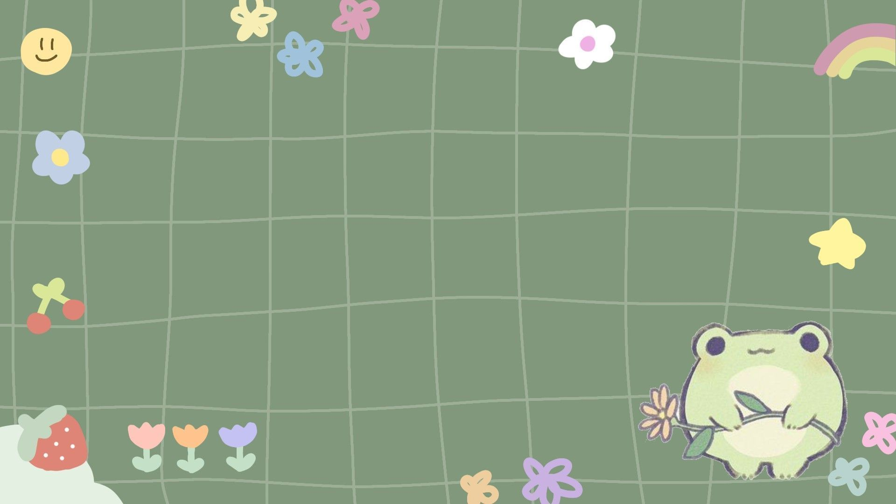

teks ini berwarna kuning, kode warna ini yaitu #EBE76C
teks ini berwarna lilac, kode warna ini yaitu #DFCCFB
teks ini bewarna pink, kode warna ini yaitu #F11A7B
Background/Latar belakang :
Properti latar belakang CSS digunakan untuk menambahkan efek latar belakang
untuk elemen.
- background-color
- background-image

Border/Perbatasan :
Properti perbatasan CSS memungkinkan Anda menentukan gaya, lebar, dan warna
perbatasan elemen.
Properti border-stylemenentukan jenis batas yang akan ditampilkan.
Nilai berikut diperbolehkan:
Mendefinisikan perbatasan bertitik
Mendefinisikan perbatasan putus-putus
Mendefinisikan perbatasan yang solid
Mendefinisikan perbatasan ganda
Mendefinisikan perbatasan berlekuk 3D. Efeknya tergantung pada nilai warna batas
Mendefinisikan perbatasan bergerigi 3D. Efeknya tergantung pada nilai warna batas
Menentukan perbatasan sisipan 3D. Efeknya tergantung pada nilai warna batas
Menentukan batas awal 3D. Efeknya tergantung pada nilai warna batas
Mendefinisikan tanpa batas
Mendefinisikan perbatasan tersembunyi
Padding :
Padding digunakan untuk membuat ruang di sekitar konten elemen, di dalam batas yang ditentukan.
Elemen div ini memiliki padding atas 50px, padding kanan
30px,
padding bawah 50px, dan padding
kiri 80px
Margin :
Margin digunakan untuk menciptakan ruang di sekitar elemen, di luar batas yang ditentukan.
Elemen div ini memiliki margin atas 100px, margin kanan 150px
,
margin bawah 100px, dan margin
kiri 80px.
Height dan Width :
CSS height dan width properti digunakan untuk mengatur tinggi dan lebar elemen.
Elemen ini memiliki tinggi 100
piksel dan lebar 50%
Font :
Font ini merupakan gaya text.memilih font yang tepat untuk situs web Anda itu penting!
This is a paragraph, shown in the Times New Roman font.
This is a paragraph, shown in the Arial font.
This is a paragraph, shown in the Lucida Console font.
Max-width :
Properti CSS max-widthdigunakan untuk mengatur lebar maksimum elemen.
Elemen ini memiliki tinggi 100 piksel dan lebar maksimum 500
piksel:
Position :
Properti position menentukan jenis metode pemosisian yang digunakan untuk elemen (statis,
relatif, tetap, absolut, atau lengket).
Elemen ini memiliki position: relative;
Elemen ini memiliki position: absolute;
Float :
float menentukan bagaimana sebuah elemen harus mengambang.
Properti ini floatdigunakan untuk memposisikan dan memformat konten misalnya membiarkan gambar
mengambang ke kiri ke teks dalam wadah.
Properti floatdapat memiliki salah satu dari nilai berikut:
- left- Elemen mengapung di sebelah kiri wadahnya
- right- Elemen mengapung di sebelah kanan wadahnya
- none- Elemen tidak mengapung (akan ditampilkan tepat di tempat kemunculannya di teks). Ini
default
- inherit- Elemen mewarisi nilai float dari induknya
- Dalam penggunaannya yang paling sederhana, floatproperti dapat digunakan untuk membungkus teks
di sekitar gambar.
Float Right
In this example, the image will float to the right in the paragraph, and the text in the paragraph will
wrap around the image.
mie instant